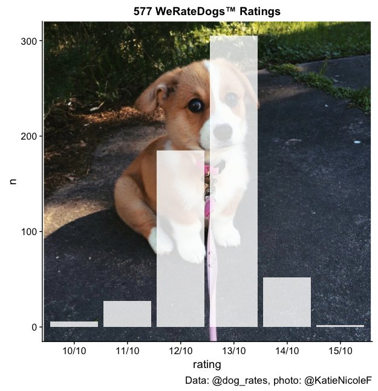

From Twitter:

The most common rating for dogs from @dog_rates is 13/10. A few are 15/10 but all dogs deserve that rating in my opinion. Pictured with Ellie (12/10) from @KatieNicoleF. pic.twitter.com/B46rRDSCRY
— Herb Susmann (@herbps10) February 3, 2018
Here’s the R code I used to generate the histogram:
library(rtweet)
library(tidyverse)
library(stringr)
library(cowplot)
library(grid)
library(jpeg)
g <- rasterGrob(readJPEG("ellie.jpg"), interpolate = TRUE)
tmls <- get_timelines("dog_rates", n = 3200)
ratings <- tmls %>%
filter(str_detect(text, "t.co")) %>%
filter(!str_detect(text, "^RT")) %>%
filter(!str_detect(text, "Here's a little more info on Dew")) %>%
mutate(rating = map(text, str_extract_all, "1[0-5]/10"),
rating = map(rating, `[[`, 1)) %>%
unnest(rating) %>%
count(rating)
ggplot(ratings, aes(x = rating, y = n)) +
annotation_custom(g) +
geom_col(fill = "white", alpha = 0.8) +
labs(caption = "Data: @dog_rates, photo: @KatieNicoleF",
title = "577 WeRateDogs™ Ratings")The R code is also available as a gist.